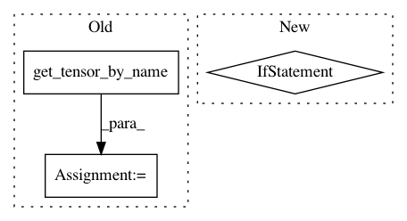

f0bccfe5ba2887bf99b458310326c80ea7f1dbda,fool/predictor.py,NPredictor,__init__,#NPredictor#Any#Any#Any#,65
Before Change
def __init__(self, model_path, num_class, is_pos=False):
self.graph = load_graph(model_path)
if is_pos:
self.pos_in = self.graph.get_tensor_by_name("prefix/pos:0")
self.is_pos = is_pos
self.input_x = self.graph.get_tensor_by_name("prefix/chatInputs:0")
self.segs = self.graph.get_tensor_by_name("prefix/segs:0")
After Change
def __init__(self, model_file, char_to_id, id_to_tag):
self.char_to_id = char_to_id
self.id_to_tag = {int(k):v for k,v in id_to_tag.items()}
self.graph = load_graph(model_file)
self.input_x = self.graph.get_tensor_by_name("prefix/char_inputs:0")
In pattern: SUPERPATTERN
Frequency: 3
Non-data size: 3
Instances
Project Name: rockyzhengwu/FoolNLTK
Commit Name: f0bccfe5ba2887bf99b458310326c80ea7f1dbda
Time: 2018-01-15
Author: zhengwu314@163.com
File Name: fool/predictor.py
Class Name: NPredictor
Method Name: __init__
Project Name: GPflow/GPflow
Commit Name: 34f3052d50c535c5036474dd74b7d0ed85602a7a
Time: 2017-09-04
Author: art.art.v@gmail.com
File Name: gpflow/param.py
Class Name: Param
Method Name: is_compiled
Project Name: marcoancona/DeepExplain
Commit Name: d0b03af329a2b2bf679ae33981f34636ce19690a
Time: 2017-11-03
Author: marco.ancona@inf.ethz.ch
File Name: deepexplain/tensorflow/methods.py
Class Name:
Method Name: deepexplain_grad